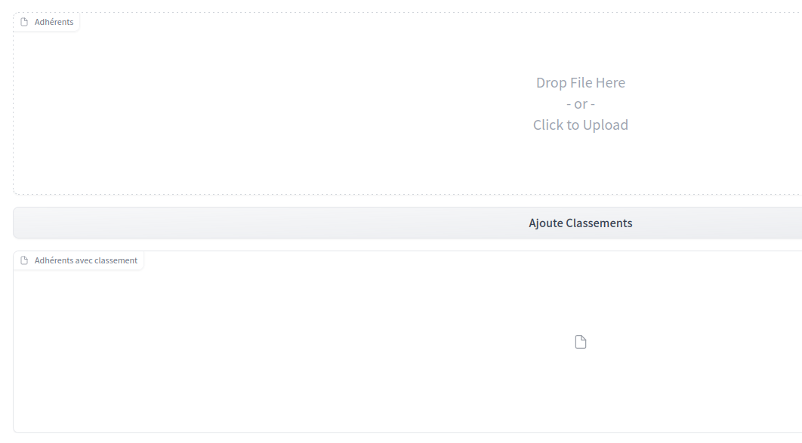

There is a new version of Gradio announced. Have to try it.
These apps can then be hosted on huggingface. Let’s try that.
How to do it
I have a small need that gradio could fit perfectly.
I am in the board of a badminton club. We have list of members given by one source. And updated rankings given by another source (these rankings can evolve during the year, actually after each game)
import pandas as pdpd.read_html('https://badmania.fr/club-joueurs-2254-riom-badminton-club.html')[0].head()
Nom ▼▲
Nom ▼▲.1
Prénom ▼▲
Prénom ▼▲.1
Sexe
Licence
Catégorie ▼▲
Classement ▼▲
Class.
0
ANDRAL
Anthony
ANDRAL
Anthony
NaN
7354056
Senior
P11/P10/P10
P11/P10/P10
1
AVARGUEZ
Eric
AVARGUEZ
Eric
NaN
6630518
Veteran 6
P11/D9/P10
P11/D9/P10
2
BARBIER DARDARE
Léna
BARBIER...
Léna
NaN
7454028
Minibad
-/-/-
-/-/-
3
BARDEL
Damien
BARDEL
Damien
NaN
7250210
Veteran 1
P12/P12/P11
P12/P12/P11
4
BARRAUD
Ines
BARRAUD
Ines
NaN
7354562
NaN
-/-/-
-/-/-
Because list of members provide ‘Licence’ column (License), it is easy to link the 2 files together
Everything is under update_classement.ipynb: * get_classement to extract ranking from a given license * add_classements to add all the ranking to the members list (using apply(lambda x: get_classement(x))
Export rankings function with nbdev
Here I am using the basic export function from nbdev2.
declare filename to export to
Just by inserting
#|default_exp rbc
at the top of notebook. It means it will export rbc.py
with 2 file zones, one button and one action (click to send file content to a function analyse_fichier)
analyse_fichier which takes the file, use add_classements from rbc, save the new content in a temporary file, and return it as the 2nd file block output.

image.png
export to main.py
This is the same logic as earlier.
declare export name with #|default_exp app
declare cells to export with #| export
export from main.ipynb to main.py with import nbdev; nbdev.export.nb_export('main.ipynb', lib_path='.')
Just by launching Restart kernel and run all cells, everything is run smoothly and main.py is created